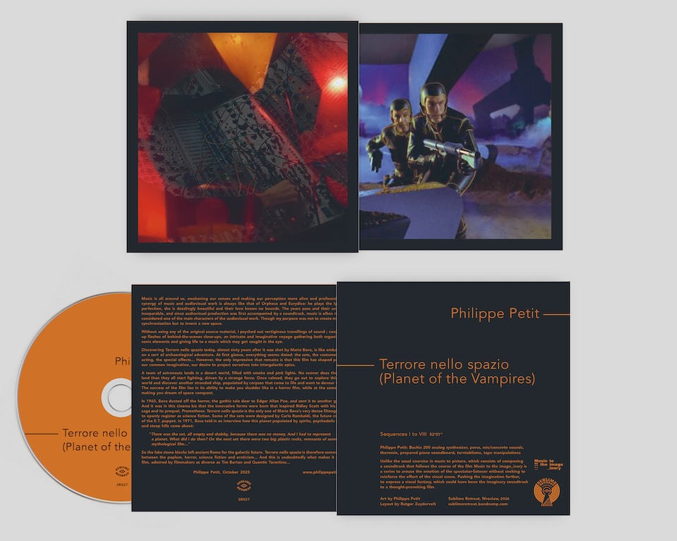
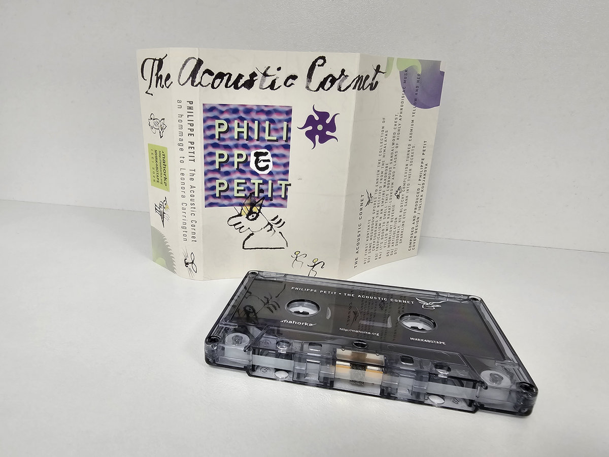

Philippe Petit - Elegy
(I Shall Sing Until My Land Is Free / DL - August 2025)
Listen / Ordera musical travel-agent

(Sublime Retreat / CD + DL - June 2026)

(Mahorka / MC + Digital - February 2026)
Direct Orders Very Welcome
Prices below are POSTPAID _ PAYPAL ACCEPTED
(I Shall Sing Until My Land Is Free / DL - August 2025)
Listen / Order
(Crónica / CD + DL - April 2025)

(Sublime Retreat - CD/DL. March 2025)

(FMOA - February 2025)
Listen / Order
(Crónica / DL - December 2024)

(Oscillations Records / CD + DL - November 2024)
15 euros

(Modulisme / DL - October 2024)

(Eternal Music Project / Double CD + DL - July 2024)
20 euros
View on Bandcamp
(Crónica / Double CD + DL - February 2024)
20 euros
More Info
(Oscillations Records / CD + DL - November 2023)
15 euros
Bandcamp
(Crónica / DL - July 2023)
Info
(Attenuation-Circuit / CD - February 2023)

(Public Eyesore / CD - January 2023)
15 euros

(ERR REC Concrète n°1 K7 + DL - December 2022)
Listen
(Oscillations Records / CD + DL - November 2022)
Listen
(Aural Terrains / CD - October 2022)
Link
(CD + DL / Opa-Loka - December 2021)
15 euros

(FREE Streaming / MOD 051 - October 2021)
Stream
(DL - Vicmod / April 2021)

(Vinyl - Cyland Archives 49. December 2020)

(Digital / Muteant Records - December 2020)

(CD - Flag Days / December 2020)

(DL - Truth Table - November 2020)

(CD + Digital / Opa-Loka - October 2020)
15 euros

(Digital / Ante-Rasa Records. Sept 2020)

(Digital / Muteant Records - August 2020)

(Bandcamp only)
(Free Streaming / Data Cult Audio #154 - March 2020)

(CD + Digital / Opa-Loka - February 2020)
15 euros

(Vinyl + CD / Sound Crucible - January 2020)
20 euros

(CD + Digital / Opa-Loka - Summer 2019)
15 euros

(M-Tronic - May 2019)

(M-Tronic / Digital - April 2019)

(LP on Blackhouse - September 2018 + CD on Lumberton Trading Co. June 2018)

(LP + Digital / Jelodanti + Atypeek - May 2018)

(LP + CD + Digital / Aagoo Rec. April 2018)
CD 15 Euros / LP 20 Euros

(Digital / Atypeek - July 2017)

(CD + Digital - Templo Sagital - January 2017)

(CD / Glacial Movements - May 2016)

(CD / Bolt - July 2015)
15 euros

(Picture Disc vinyl + CD / Aagoo - June 2015)

(Double CD - Auricular - October 2014)

(Flamin Pines - June 2014)

Are You Receiving Us, Planet Earth ?! (Rustblade - April 2014)

(Double LP + Double CD / Rustblade - December 2013)

(LP + CD + Digital / Rev. Lab. - Aagoo - September 2013)

(Pict. Disc vinyl album + Digital/ Alrealon Musique - MAY 2013)

A Ti Dou Li Dum A Ti Dou Li Dou Ti Dé (January 2013. CD / HelloSquare)

Last Of The Dead Hot Lovers (November 2012. LP - CD - Digital / SouthernUK)

Hitch-hiking Thru Bronze Mirrors (October 2012. CD - Digital / Aagoo Rds)

Fire-Walking To Wonderland (June 2012. CD - Digital / Aagoo Rds)

Oneiric Rings On Grey Velvet (January 2012. CD - Digital / Aagoo Rds)

(Small Doses/Basses Fréquences - July 2012)
15 euros

(vinyl 10" + Digital / Alrealon Musique MAY 2012)

(Utech Records)

(CD / Home Normal - April 2012)

Ron Anderson / Robert L. Pepper / David Tamura / Philippe Petit (FEB 2012)

(April 2012 - LP / Siluh)

(vinyl soundpostcard / Lumberton Trading Co. - January 2012)

(CD + Digital / Monotype - July 2011)

(May 2011 - 12" Pict. Disc vinyl)

(FEB 2011 - CD + Digital - Sub Rosa)

(JAN 2011 - Vinyl LP + Digital - Aagoo)

(DEC 2010 - CD + DVD + Book / Monotype)

(OCT 2010 - picture-disc 7' - Dirter)

a rework of Gustav Mahler's symphonic poem (SEPT 2010 - CD - Karl Rds)

(MAY 2010 - Double CD + Digital - Aagoo Rds)

(MARCH 2010 - CD - Boring Machines)

(JAN 2010 - CD - Trace Recordings)

(OCT 2009 - CD - Beta Lactam Ring)

(MAY 2009 - CD - Dirter)

(MARCH 2009 - CD - BiP_HOp/The Wire)